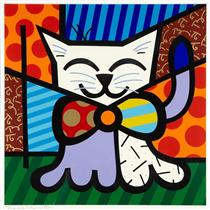
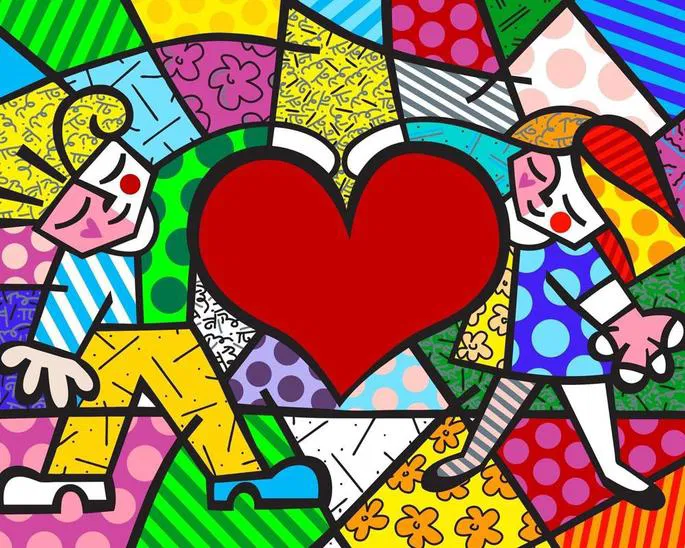

Bibliografia
Romero Britto (1963 - ): Artista plástico brasileiro, é um dos nomes mais reconhecidos da arte pop contemporânea. Conhecido por seu estilo vibrante e otimista, mistura elementos do cubismo, grafite e arte pop, usando cores vivas e formas geométricas marcantes.
Vida: Nascido em Recife, Pernambuco, demonstrou talento desde cedo, desenhando em materiais improvisados. Autodidata no início, mais tarde estudou e viajou pela Europa, absorvendo influências de artistas como Picasso e Matisse. Estabeleceu-se em Miami, nos Estados Unidos, na década de 1980, onde consolidou sua carreira internacional.
Obra: Seu estilo, marcado por traços espessos e cores intensas, busca transmitir mensagens de alegria, amor e esperança. É conhecido por criar obras acessíveis e comerciais, além de peças únicas. Entre suas criações estão pinturas, esculturas e murais públicos. Colaborou com marcas como Coca-Cola, Disney, Absolut e Audi, tornando sua arte amplamente difundida.
Excentricidade e Legado: Embora menos polêmico que outros artistas pop, Britto é reconhecido por sua personalidade carismática e presença marcante no cenário artístico. Também é envolvido com causas sociais e beneficentes. Seu legado está na popularização de uma arte acessível e positiva, que conecta o público com sentimentos de otimismo e celebração da vida.
Obras Famosas
-
O Gato
O Gato de Romero Britto, criado em 1994, é uma obra colorida e estilizada, com formas geométricas e padrões vibrantes, características do estilo pop art e cubista do artista. A pintura transmite uma sensação de alegria e energia positiva, refletindo a visão otimista de Britto. O gato, como símbolo de graça e mistério, é uma das figuras icônicas em sua arte acessível e divertida.
-
Mona Cat

Mona Cat de Romero Britto é uma releitura moderna e colorida da Mona Lisa de Leonardo da Vinci. Britto transforma a personagem clássica em um gato estilizado, usando cores vibrantes, formas geométricas e padrões típicos de seu estilo pop art. A obra mistura a sofisticação da arte clássica com a energia alegre e acessível de Britto, criando uma homenagem divertida e otimista ao ícone da arte.
-
Peixe

Peixede Romero Britto é uma obra vibrante e otimista, caracterizada por cores fortes, formas geométricas e padrões ousados. O peixe simboliza harmonia e energia positiva, refletindo a visão alegre e acessível de Britto. A obra mistura elementos da natureza com o estilo pop art e cubista do artista, criando uma peça lúdica e inspiradora.
-
Heart
"Heart" de Romero Britto é uma vibrante celebração do amor e da emoção, marcada por suas cores explosivas e padrões geométricos dinâmicos, típicos do seu estilo pop art com toques cubistas. A obra transmite uma forte sensação de alegria e otimismo, reinterpretando o coração como um símbolo acessível e contagiante, convidando à celebração do sentimento de forma leve e positiva. É um exemplo da habilidade de Britto em transformar ícones cotidianos em experiências artísticas alegres e descomplicadas.